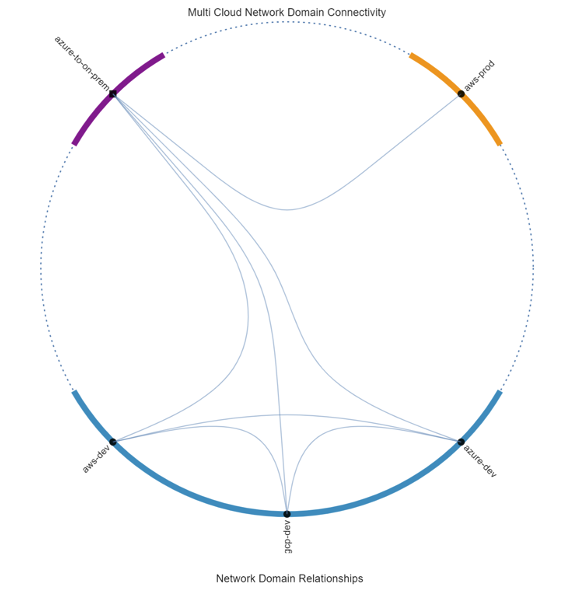

Lab E#
Aviatrix Security features#
In this lab, we are going to explore some of the security features that Aviatrix provides. Currently we have open and unlimited communication between all VPC’s and VNET’s and Site2Cloud connection. We rely on security groups/NSG’s to secure the workloads. But what if we need more deliberate segmentation? Aviatrix provides the concept of Network Domains. Let’s see how these work and what they can do for us.
Exercise E.1 – Enable segmentation on transit gateways#
Check the transit module documentation and aviatrix_transit_gateway resource documentation, to find how to enable segmentation on the transit gateways.
Spoiler code:
Show code cell content
module "gcp_transit" {
source = "terraform-aviatrix-modules/mc-transit/aviatrix"
version = "2.3.0"
…
enable_segmentation = true
}
(AWS Transit is same as the above)
resource "aviatrix_transit_gateway" "azure_transit" {
…
enable_segmentation = true
}
Exercise E.2 – Create network domains#
Next we are going to create some network domains, which we can use for segmentation.
Create the following network domains: Prod, Dev and Onprem, using the aviatrix_segmentation_security_domain resource.
Spoiler code:
Show code cell content
resource "aviatrix_segmentation_security_domain" "prod" {
domain_name = "Prod"
}
resource "aviatrix_segmentation_security_domain" "dev" {
domain_name = "Dev"
}
resource "aviatrix_segmentation_security_domain" "onprem" {
domain_name = "Onprem"
}
Exercise E.3 – Create connection policies#
Use the aviatrix_segmentation_security_domain_connection_policy resource, to create the following connection policies:
Prod<->OnpremDev<->Onprem
Spoiler code:
Show code cell content
resource "aviatrix_segmentation_security_domain_connection_policy" "prod_onprem" {
domain_name_1 = aviatrix_segmentation_security_domain.prod.domain_name
domain_name_2 = aviatrix_segmentation_security_domain.onprem.domain_name
}
resource "aviatrix_segmentation_security_domain_connection_policy" "dev_onprem" {
domain_name_1 = aviatrix_segmentation_security_domain.dev.domain_name
domain_name_2 = aviatrix_segmentation_security_domain.onprem.domain_name
}
Exercise E.4 – Add VPC’s/VNET’s/S2C to Network Domains#
Check the spoke module documentation to see how you can configure the network domain for your spokes. Check the aviatrix_segmentation_security_domain_association resource for how to create the network domain association for the datacenter VPN.
Create the following network domain associations with the above.
aws-dev |
Dev |
aws-prod |
Prod |
gcp-dev |
Dev |
azure-dev |
Dev |
azure-to-on-prem (Datacenter VPN) |
Onprem |
Spoiler code:
Show code cell content
module "gcp_dev" {
source = "terraform-aviatrix-modules/mc-spoke/aviatrix"
version = "1.4.1"
..
security_domain = aviatrix_segmentation_security_domain.dev.domain_name
}
(Same for the other DEV spokes)
module "aws_prod" {
source = "terraform-aviatrix-modules/mc-spoke/aviatrix"
version = "1.4.1"
..
security_domain = aviatrix_segmentation_security_domain.prod.domain_name
}
resource "aviatrix_segmentation_security_domain_association" "datacenter" {
transit_gateway_name = aviatrix_transit_gateway.azure_transit.gw_name
security_domain_name = aviatrix_segmentation_security_domain.onprem.domain_name
attachment_name = aviatrix_transit_external_device_conn.datacenter.connection_name
}
Check the Network Domain overview in CoPilot. It should look like this:
 Fig. Network Domains
All right, that’s it!